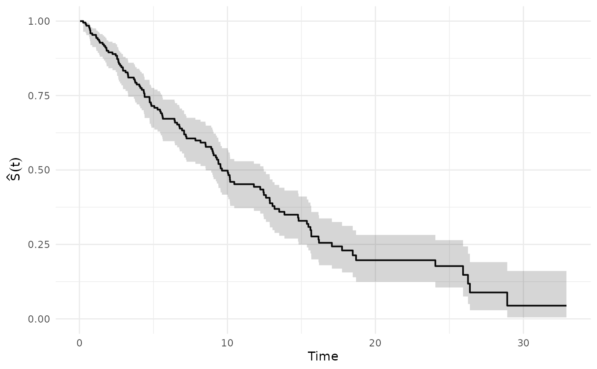

Kaplan–Meier survival curve and a lifetable-style life table
Source:R/km_lifetable.R
km_lifetable.RdFits the nonparametric Kaplan–Meier estimator \(\hat S(t)\) for
right-censored time-to-event data, computes Greenwood's variance estimator
for \(\hat S(t)\), and constructs a discrete life table by evaluating
\(\hat S(t)\) at user-provided cut points (breaks).
Usage
km_lifetable(
time,
status,
entry = NULL,
breaks = NULL,
radix = 1e+05,
conf_level = 0.95,
assumption = c("UDD", "CF", "Balducci")
)Arguments
- time
Numeric vector. Observed times (event or censoring times).
- status
Integer/numeric vector of the same length as
time. Use1for event (death),0for right-censoring.- entry
Optional numeric vector of entry times (left truncation / delayed entry). If provided, must have the same length as
timeand satisfyentry <= time. IfNULL, all individuals are assumed to enter at time 0.- breaks
Optional numeric vector of increasing cut points used to build the discrete life table (e.g.,
0:omega). IfNULL, defaults to integer ages from0toceiling(max(time)).- radix
Numeric. Life table radix used to scale \(\ell_x\) (default
1e5).- conf_level
Numeric in
(0,1). Confidence level for pointwise intervals for \(\hat S(t)\) computed via the log(-log) transformation (default0.95).- assumption
Character. Fractional-age assumption used to compute \(L_x\) within each interval:
"UDD","CF"(constant force), or"Balducci".
Value
A list with two tibbles:
km: tibble with columnstime,n_risk,d,censored,S,varS,seS,ci_low,ci_high.lifetable: tibble with columnsx,x_next,width,lx,dx,qx,px,mx,ax,Lx,Tx,ex. Carries class"lifetable"and standard attributes for compatibility with downstream functions.
Details
The resulting life table is intended for experience-based (empirical) life tables in actuarial/demographic contexts (e.g., cohort studies, population indicators). It is not a replacement for graduated/regulatory tables when smoothing, extrapolation, or product-specific selection effects are required.
Kaplan–Meier estimator. At each observed event time \(t_j\): $$\hat S(t) = \prod_{t_j \le t} \left(1 - \frac{d_j}{n_j}\right)$$ where \(n_j\) is the risk set size and \(d_j\) is the number of events. Greenwood's variance: $$\widehat{\mathrm{Var}}(\hat S(t)) = \hat S(t)^2 \sum_{t_j \le t} \frac{d_j}{n_j(n_j - d_j)}.$$ Pointwise confidence intervals use the log(-log) transformation.
Life table mapping. For each interval \([x, x + \Delta)\): $$\ell_x = \text{radix} \cdot \hat S(x), \quad d_x = \ell_x - \ell_{x+\Delta}, \quad q_x = d_x / \ell_x.$$
Exposure \(L_x = \int_x^{x+\Delta} \ell(t)\,dt\) is computed using the selected fractional-age assumption (Finan, Section 24):
UDD (Finan, Sec. 24.1): \(L_x \approx \tfrac{\ell_x + \ell_{x+\Delta}}{2} \Delta\)
CF (constant force, Finan, Sec. 24.2): \(L_x = \Delta \cdot (\ell_x - \ell_{x+\Delta}) / \ln(\ell_x / \ell_{x+\Delta})\)
Balducci (Finan, Sec. 24.3): \(L_x = \Delta \cdot \ell_x \ell_{x+\Delta} / (\ell_x - \ell_{x+\Delta}) \cdot \ln(\ell_x / \ell_{x+\Delta})\)
Additional columns follow Finan, Sections 23.3, 23.8–23.9:
\(T_x = \sum_{k \ge x} L_k\): total expected years lived after age \(x\) (Finan, Sec. 23.3).
\(\mathring{e}_x = T_x / \ell_x\): complete life expectancy (Finan, Sec. 23.3).
\(m_x = d_x / L_x\): central death rate (Finan, Sec. 23.9).
\(a_x = (\ell_x \Delta - L_x) / d_x\): average fraction of the interval lived by those who die.
Examples
set.seed(1)
n <- 200
trueT <- rexp(n, rate = 0.08)
censT <- rexp(n, rate = 0.04)
time <- pmin(trueT, censT)
status <- as.integer(trueT <= censT)
out <- km_lifetable(time, status, breaks = 0:25, radix = 100000)
head(out$km)
#> # A tibble: 6 × 9
#> time n_risk d censored S varS seS ci_low ci_high
#> <dbl> <dbl> <int> <int> <dbl> <dbl> <dbl> <dbl> <dbl>
#> 1 0.0425 200 0 1 1 0 0 NA NA
#> 2 0.0877 199 0 1 1 0 0 NA NA
#> 3 0.113 198 0 1 1 0 0 NA NA
#> 4 0.141 197 0 1 1 0 0 NA NA
#> 5 0.191 196 0 1 1 0 0 NA NA
#> 6 0.253 195 1 0 0.995 0.0000262 0.00512 0.964 0.999
head(out$lifetable)
#> # A tibble: 6 × 12
#> x x_next width lx dx qx px mx ax Lx Tx ex
#> <int> <int> <int> <dbl> <dbl> <dbl> <dbl> <dbl> <dbl> <dbl> <dbl> <dbl>
#> 1 0 1 1 100000 4631. 0.0463 0.954 0.0474 0.500 97684. 1.16e6 11.6
#> 2 1 2 1 95369. 5872. 0.0616 0.938 0.0635 0.500 92433. 1.07e6 11.2
#> 3 2 3 1 89497. 6148. 0.0687 0.931 0.0711 0.5 86423. 9.74e5 10.9
#> 4 3 4 1 83349. 4636. 0.0556 0.944 0.0572 0.500 81031. 8.88e5 10.7
#> 5 4 5 1 78713. 7219. 0.0917 0.908 0.0961 0.500 75103. 8.07e5 10.3
#> 6 5 6 1 71494. 4294. 0.0601 0.940 0.0619 0.500 69347. 7.32e5 10.2
# Tidy pipeline: filter high-mortality intervals
out$lifetable |> dplyr::filter(qx > 0.05)
#> # A tibble: 18 × 12
#> x x_next width lx dx qx px mx ax Lx Tx ex
#> <int> <int> <int> <dbl> <dbl> <dbl> <dbl> <dbl> <dbl> <dbl> <dbl> <dbl>
#> 1 1 2 1 95369. 5872. 0.0616 0.938 0.0635 0.500 92433. 1.07e6 11.2
#> 2 2 3 1 89497. 6148. 0.0687 0.931 0.0711 0.5 86423. 9.74e5 10.9
#> 3 3 4 1 83349. 4636. 0.0556 0.944 0.0572 0.500 81031. 8.88e5 10.7
#> 4 4 5 1 78713. 7219. 0.0917 0.908 0.0961 0.500 75103. 8.07e5 10.3
#> 5 5 6 1 71494. 4294. 0.0601 0.940 0.0619 0.500 69347. 7.32e5 10.2
#> 6 6 7 1 67200. 3935. 0.0586 0.941 0.0603 0.500 65232. 6.62e5 9.86
#> 7 7 8 1 63265. 3360. 0.0531 0.947 0.0546 0.5 61585. 5.97e5 9.44
#> 8 8 9 1 59905. 3558. 0.0594 0.941 0.0612 0.5 58126. 5.36e5 8.94
#> 9 9 10 1 56347. 6566. 0.117 0.883 0.124 0.5 53064. 4.77e5 8.47
#> 10 10 11 1 49781. 4551. 0.0914 0.909 0.0958 0.5 47505. 4.24e5 8.53
#> 11 12 13 1 44343. 5526. 0.125 0.875 0.133 0.5 41580. 3.32e5 7.49
#> 12 13 14 1 38817. 3837. 0.0988 0.901 0.104 0.500 36899. 2.91e5 7.48
#> 13 14 15 1 34980. 2058. 0.0588 0.941 0.0606 0.5 33951. 2.54e5 7.25
#> 14 15 16 1 32922. 5251. 0.159 0.841 0.173 0.5 30297. 2.20e5 6.67
#> 15 16 17 1 27672. 2129. 0.0769 0.923 0.0800 0.5 26608. 1.89e5 6.84
#> 16 17 18 1 25543. 2568. 0.101 0.899 0.106 0.5 24259. 1.63e5 6.37
#> 17 18 19 1 22975. 3282. 0.143 0.857 0.154 0.500 21334. 1.39e5 6.03
#> 18 24 25 1 19693. 1969. 0.1 0.9 0.105 0.5 18709. 1.87e4 0.95
# Compare UDD vs CF assumptions
udd <- km_lifetable(time, status, breaks = 0:20, assumption = "UDD")
cfm <- km_lifetable(time, status, breaks = 0:20, assumption = "CF")
c(ex_udd = udd$lifetable$ex[1], ex_cf = cfm$lifetable$ex[1])
#> ex_udd ex_cf
#> 10.66941 10.66335
# Plot the KM curve with plot_km
plot_km(out$km, time_col = "time", surv_col = "S",
lower_col = "ci_low", upper_col = "ci_high")
#> Warning: Removed 10 rows containing missing values or values outside the scale range
#> (`geom_ribbon()`).
